The 10 Scariest Movies of All Time
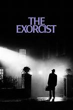
#1
The Exorcist (1973)
A young girl's demonic possession pushes two priests to their limits in this genre-defining classic.
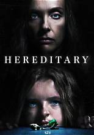
#2
Hereditary (2018)
A family unravels after a tragic loss reveals a dark inheritance they never asked for.
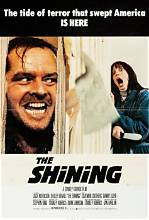
#3
The Shining (1980)
An isolated hotel and a slow-building descent into madness make this a masterclass in dread.
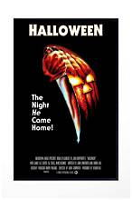
#4
Halloween (1978)
The slasher film that set the template — a masked killer stalking a quiet suburban night.
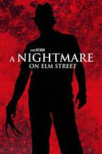
#5
A Nightmare on Elm Street (1984)
A killer who hunts teenagers in their dreams, blurring the line between nightmare and reality.
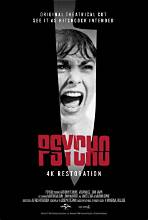
#6
Psycho (1960)
Hitchcock's motel thriller redefined suspense and gave horror one of its most iconic scenes.
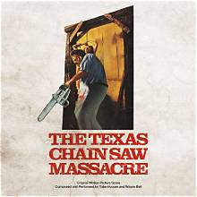
#7
The Texas Chain Saw Massacre (1974)
A raw, relentless survival horror film that still feels dangerous decades later.
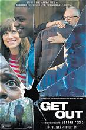
#8
Get Out (2017)
A visit to a girlfriend's family home turns into a chilling, socially sharp nightmare.
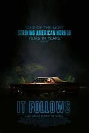
#9
It Follows (2014)
An unseen, unstoppable presence follows its target at a walking pace — and never stops.
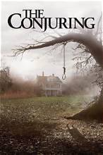
#10
The Conjuring (2013)
Paranormal investigators face a haunted farmhouse in this modern classic of jump-scare horror.
The 10 Most Fun Halloween Movies for Kids
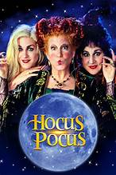
#1
Hocus Pocus (1993)
Three witches return from the dead for one wild night in Salem — a Halloween staple.
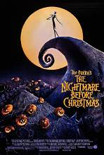
#2
The Nightmare Before Christmas (1993)
A stop-motion classic where the pumpkin king of Halloween Town discovers Christmas.
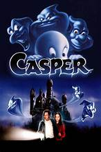
#3
Casper (1995)
A friendly ghost just wants a friend — sweet, funny, and gentle enough for younger kids.
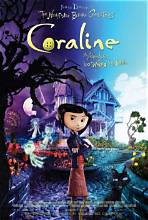
#4
Coraline (2009)
A stunning stop-motion adventure about a girl who finds an "other" world behind a hidden door.
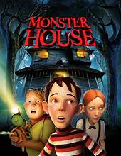
#5
Monster House (2006)
Three kids discover the house across the street is alive — spooky, but full of heart.
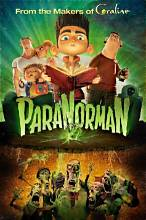
#6
ParaNorman (2012)
A boy who can talk to the dead has to save his town from a centuries-old curse.
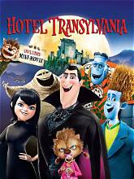
#7
Hotel Transylvania (2012)
Dracula runs a monster-only resort — until one human guest shows up uninvited.
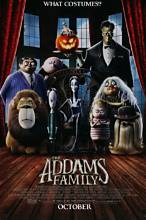
#8
The Addams Family (2019)
The lovably macabre family settles into a new town in this animated take on the classic.
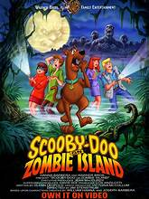
#9
Scooby-Doo on Zombie Island (1998)
The gang faces real supernatural danger for once — a fan-favorite among Scooby movies.
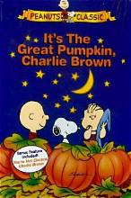
#10
It's the Great Pumpkin, Charlie Brown (1966)
A short, cozy classic — perfect for a low-key Halloween night with younger kids.